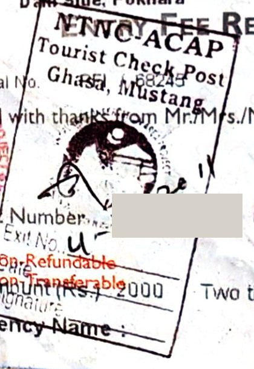
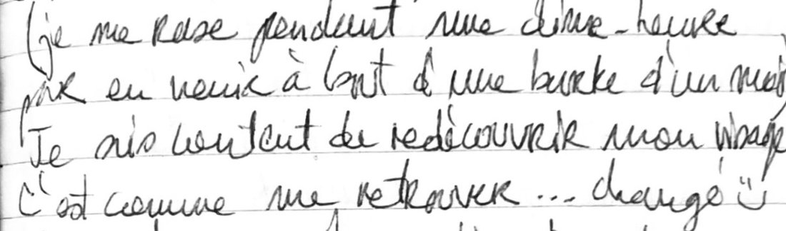
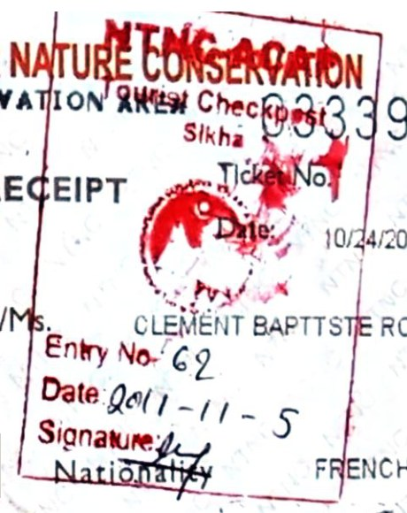
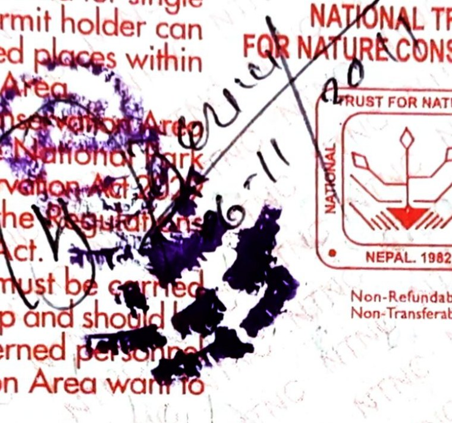
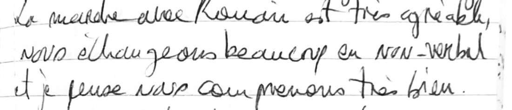
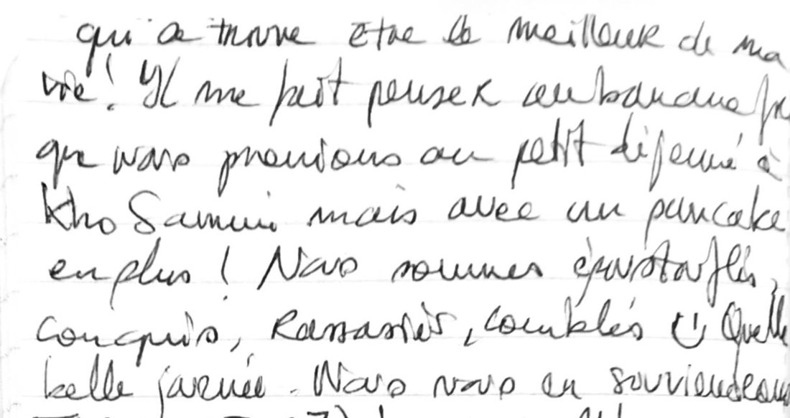

Chapitre 3 · 3 – 17 novembre 2011
Kali Gandaki et sanctuaire des Annapurnas
De Marpha au pied de l'Annapurna I, puis six jours à Pokhara
Le 2 novembre au soir, à Marpha, nous fêtons à la fois la fin du tour du Dhaulagiri et notre premier mois au Népal. Reste la suite. D'abord, descendre la vallée de la Kali Gandaki par le célèbre tour des Annapurnas, que nous n'avons aucune envie de boucler : les montagnes y sont les mêmes, mais les vallées ont été entièrement humanisées. Ensuite, le sanctuaire, un chemin qui s'enfonce dans le massif jusqu'aux camps de base du Machapuchare et de l'Annapurna I. Nous l'espérons intact, et nous comptons le parcourir à notre manière : en ne consommant que des produits locaux, loin des circuits conçus pour les touristes casaniers. Au bout, il y aura Pokhara, où nous resterons plus longtemps que prévu.
Jour 103 novembre 2011
La route des Annapurnas
Marpha → Kalopani
- départ vers 10 h 30 · arrivée dans l'après-midi
- nuit à l'hôtel, Kalopani · 2 530 m · 100 Rps
Le 3 novembre, nous nous réveillons à Marpha, dans le lodge où nous avons fêté hier soir la fin du tour du Dhaulagiri. Je suis debout à 6 h 30, réglé par la seule horloge du corps, et je lis en attendant que Romain se réveille. Au petit déjeuner, à l'hôtel, un milk tea et un apple crumble : un petit délice. Nous nous préparons sans hâte. Le corps se repose ; il se remet des neuf derniers jours.
Vers 10 h 30, nous quittons Marpha pour notre première étape sur le tour des Annapurnas, et la déception est immédiate. Le tracé tient du gros GR, avec des bus, des jeeps et des motos. Le chemin est sans intérêt, la vue bouchée par des nuages gris et monotones, et un vent de face, froid et régulier, n'arrange pas notre jugement. Ce vent est une habitude de la vallée : chaque jour, à partir de la fin de matinée, il la remonte, poussé par la différence de pression entre le plateau tibétain et le bas de la Kali Gandaki. Nous descendons vers le sud ; nous l'avons en pleine figure. Quant aux bus, ils roulent sur une route dont la construction a commencé au début des années 1980 et qui remonte aujourd'hui la vallée jusqu'à Muktinath. Elle a changé l'allure et l'atmosphère des villages.
Le décor, lui, n'est pas petit. La Kali Gandaki passe ici entre le Dhaulagiri, à l'ouest, et l'Annapurna I, à l'est, deux sommets de plus de 8 000 mètres distants d'environ trente-quatre kilomètres. Quelque part entre Tukuche et Lete, sur notre chemin d'aujourd'hui ou de demain, le lit de la rivière se trouve 5 571 mètres plus bas que le sommet de l'Annapurna I : on la compte parmi les gorges les plus profondes du monde.
Après un déjeuner préparé par nos soins au bord du chemin, la route devient heureusement moins passante, et c'est Romain qui remarque le premier ce qui pousse sur les bas-côtés : du cannabis. Plus nous avançons, plus la quantité nous stupéfie : il y en a partout, sauvage ou cultivé. De là naît une longue discussion, passionnante, sur les drogues, les usages du chanvre, ses vertus thérapeutiques, la loi, l'alcool, les abus. Nous marchons d'un bon pas sans y prêter attention, et nous arrivons à Kalopani dans l'après-midi, au bout de dix-neuf kilomètres de piste presque à plat.
Nous trouvons tout de suite une chambre bon marché, 100 roupies, dans un hôtel plutôt luxueux : nous n'y mangerons pas. Le dîner, nous le ferons nous-mêmes. Après un long repérage parmi des boutiques faites surtout pour les touristes, nous en dénichons une, à demi enterrée, qui vend, nous le découvrons au fil de la conversation, des graines, des légumes, des œufs, du pain. Pour une somme modeste, nous repartons avec du chou, du riz sucré, des œufs, du sel, de l'huile et du riz soufflé. Ravis de nos achats, nous prenons l'apéritif, jus de pomme et chips de lentilles, puis nous passons au dîner, parfaitement réussi.
Ce soir-là, nous parlons longuement de la famille. D'Armel surtout, la maman de Romain. Des liens qui nous unissent tous, et de ce que sa mort a laissé en chacun de nous.
Puis la conversation glisse vers la cuisine : les aliments, les recettes, la culture culinaire, nos expériences. Un vrai fantasme culinaire intellectuel. Nous mangeons beaucoup, et nous parlons beaucoup. La journée commencée dans la monotonie et la récupération s'achève en feu d'artifice : des nouveautés, des découvertes, des échanges, des plaisirs de table. Dans une vallée si fréquentée, si peu sauvage, et pourtant si fertile, cela tient du miracle.
À notre allure, nous devrions bientôt atteindre le sanctuaire des Annapurnas. D'ici là, deux ou trois jours sans exigence pour le corps ni pour l'esprit : nous comptons en profiter, et apprendre encore du contraste. Nous dormons à Kalopani, à 2 530 mètres. Demain, la route continue de descendre la vallée, jusqu'à Tatopani.
Jour 114 novembre 2011
Les sources chaudes de Tatopani
Kalopani → Ghasa → Tatopani
- levés à 7 h · départ tardif
- nuit en chambre, Tatopani · 1 190 m
Le 4, à Kalopani, nous sommes debout à 7 heures. Il fait mauvais, le petit déjeuner est bon, et je suis épuisé. Nous pensons remettre l'étape au lendemain. Romain essaie de se rendormir, sans succès ; c'est moi qui y retombe.
Puis nous partons quand même, pour une longue journée sur la route du tour des Annapurnas. Mouillée, elle a au moins le mérite d'être moins poussiéreuse. Nous restons dans les nuages toute la journée, sans prendre une goutte de pluie.

Après vingt-quatre kilomètres et 1 500 mètres de descente, nous sommes contents d'arriver à Tatopani. Le nom veut dire « eau chaude », et les sources servent à tout : une grande lessive, une toilette, puis un long bain chaud. Les muscles se dénouent ; c'est exactement ce qu'il nous fallait après le Dhaulagiri.
Nous partons ensuite en quête du dîner : chou, œufs, chiura, nouilles, oignons, chips, et même une bière locale pour l'apéritif. Assis par terre dans notre chambre, un verre de bière à la main, nous parlons méditation. Le dîner est excellent, et bien mérité. L'ambiance est très bonne ; la fatigue nous rattrape vite. Nous dormons à Tatopani, à 1 190 mètres, d'un sommeil de plomb. Demain, nous quittons la Kali Gandaki : le chemin du sanctuaire commence par la longue montée vers Ghorepani.
Jour 125 novembre 2011
Une barbe d'un mois
Tatopani → Sikha → Ghorepani · jour 1 du sanctuaire
- 6 h de marche · arrivée à la tombée de la nuit
- nuit au lodge, Ghorepani · 2 860 m · 100 Rps
Le 5, à Tatopani, petit déjeuner dans la chambre, puis rangement de cette même chambre, en plein désordre. Un passage éclair sur internet, hors de prix : 5 roupies la minute, quand Freak Street, à Katmandou, en demandait 15 de l'heure. Puis une petite toilette à l'hôtel, qui tourne au chantier : il me faut une demi-heure pour venir à bout d'une barbe d'un mois.

Nous partons ensuite pour Ghorepani, le sac alourdi des provisions des cinq ou six jours à venir. Ça monte beaucoup, par des pentes abruptes, et pourtant notre rythme reste excellent du premier au dernier mètre. Je retrouve les sensations du trail et de la course à pied : à effort égal, marcher sous ce sac revient à courir.

Après six heures de marche, quinze kilomètres et 1 700 mètres de montée, nous arrivons presque cassés à Ghorepani, à la tombée de la nuit. Si haut au-dessus de Tatopani, la température a dégringolé. Le village, à près de 2 900 mètres, était une halte des marchands, qui y abreuvaient leurs bêtes : son nom réunit les mots népalais du cheval, ghora, et de l'eau, pani.
Ici, les lodges sont bien plus chers, et refusent de louer une chambre sans le dîner et le petit déjeuner. Nous finissons par en trouver une à 100 roupies, avec l'obligation de commander un plat. Nous achetons la base de nos repas des jours suivants : deux kilos de lentilles corail, 200 grammes d'oignons, 100 grammes d'ail. Après l'assiette de riz du restaurant, nous complétons le dîner dans la chambre, avec les lentilles. C'est délicieux. Couchés tôt, fatigués. Quelle journée.
Post-scriptum de la soirée : pour la première fois du voyage, je passe ma popote sous l'eau. Et je vole une cuillère en métal pendant le dîner. Depuis le Dhaulagiri, je mange avec une fourchette en plastique prise dans l'avion de l'aller, cassée en deux. Une cuillère solide, entière : quel luxe. Nous dormons au lodge de Ghorepani. Demain, cap sur Tadapani.
Jour 136 novembre 2011
Le retour de la tsampa
Ghorepani → Tadapani · jour 2 du sanctuaire
- départ 8 h 30 · arrivée sous la grêle
- nuit dans une chambre sommaire, Tadapani · 2 630 m
Le 6, à Ghorepani, la nuit a été très bonne, sur un matelas presque confortable. À 7 heures, nous descendons prendre le petit déjeuner imposé. Pour ménager les quelques roupies prévues, nous commandons deux chapatis seulement, très bons, que nous couvrons de sucre. Romain en profite pour mettre un peu de ce sucre de côté pour la suite, sans remords vu le prix des plats. Nous complétons dans la chambre, et nous partons à 8 h 30. Au premier poste de contrôle, à la sortie du village, le policier nous arrête : nous partons dans la mauvaise direction. Heureusement qu'il est là ; sans lui, nous serions sans doute redescendus sans nous en rendre compte.

L'étape doit nous faire perdre de l'altitude ; nous passons la première heure à en gagner. Comme d'habitude, nous dépassons les groupes les uns après les autres. Pour avoir connu les deux façons de faire, nous mesurons ce qui sépare les groupes organisés des marcheurs indépendants, dans le rythme comme dans l'organisation. Bientôt, nous sommes en tête avec deux autres paires d'indépendants, puis seuls devant.
La grosse journée d'hier pèse dans les jambes, et le chemin n'a rien de facile : monter pour redescendre, descendre pour remonter. Neuf kilomètres seulement, mais six cents mètres de montée et huit cents de descente, à l'usure. Nous traversons une forêt singulière, aux arbres tortueux, sur un sol noir de boue. L'air est très humide ; un brouillard épais nous enveloppe depuis le matin.
Déjeuner sur un banc de pierres, très typique du Népal, de ceux qui sont faits pour les porteurs : deux paquets de nouilles, car nous avons faim. Nous arrivons vite à Tadapani. Fatigués, transis, sous les premières gouttes de pluie mêlées de grêle, nous décidons d'y rester. Nous voulions aller plus loin ; nous avions oublié de compter le dénivelé cumulé.
Là encore, impossible de séparer la chambre du dîner et du petit déjeuner. Nous arrêtons donc une stratégie : des chambres bon marché, le plat le moins cher matin et soir, et nos provisions pour compléter. Cela devrait tenir dans le budget, de justesse. Notre chambre, très sommaire, ressemble à une cabane de jardin où l'on range les outils. Nous y préparons un thé chaud, agrémenté d'une boule de tsampa.
« Quand la tsampa fait réapparition, c'est signe de rationnement. »
Nous nous glissons dans nos sacs de couchage. Dehors, il pleut, tout est gris ; on est tellement mieux à l'intérieur. Un après-midi de lecture s'annonce, et nous voilà finalement bien installés, heureux d'être ici. Depuis notre arrivée au Népal, nous n'avons jamais dormi deux nuits au même endroit, sauf à Katmandou et, pour l'acclimatation, à Namche et à Gokyo.
Romain s'est endormi. Une idée me vient. Au Népal, j'aurai souffert du froid, du rationnement, de l'altitude, du manque de mes habitudes et de mon confort. On peut être marqué par ses souffrances ; on peut aussi en apprendre beaucoup. Elles apportent de l'expérience, des réponses. Elles obligent à remettre en ordre nos besoins, nos envies, nos objectifs, et à prendre du recul.
Le soir, une assiette de riz à l'hôtel, puis, dans la chambre, des lentilles corail, du chou et de l'ail à peine cuits, pour économiser le gaz et garder du croquant. Nous nous brûlons la langue à vouloir manger chaud : ce sont les seuls moments de chaleur entre la fin de la marche et l'entrée dans les duvets. Nous dormons dans cette cabane de Tadapani. Demain, le chemin mène à Chhomrong.
Jour 147 novembre 2011
Chhomrong, et plus loin
Tadapani → Chhomrong → Sinuwa haut · jour 3 du sanctuaire
- Chhomrong à l'heure du déjeuner
- nuit au lodge, Sinuwa haut · 2 360 m · 100 Rps
Le 7, à Tadapani, encore une belle journée. Au petit déjeuner, un bon pancake, et devant nous, enfin, l'Annapurna I et le Machapuchare. Le ciel se couvre vite, mais quel bonheur d'avoir un peu de soleil. Nous marchons vite et bien. À l'heure du déjeuner, nous sommes à Chhomrong, l'étape prévue. Nous sommes en forme : nous décidons de repartir. C'est de Chhomrong qu'en 1956 le colonel Jimmy Roberts est parti remonter en trois jours les gorges de la Modi Khola : avant lui, aucun étranger n'était entré dans le sanctuaire.
Nous faisons la connaissance d'un couple âgé qui enchaîne le sanctuaire après le tour des Annapurnas, sans guide ni porteur, avec la même idée du trek que nous.
Puis un interminable escalier de pierres nous ramène au niveau de la rivière, pour remonter aussitôt le même dénivelé de l'autre côté. Il faudra le refaire au retour : c'est le premier aller-retour de nos treks, si l'on excepte le tronçon sans intérêt entre Lukla et Namche, à l'Everest.
Après une longue montée, nous arrivons à Sinuwa, dans sa partie haute, trois cents mètres au-dessus de la partie basse. Treize kilomètres dans la journée, 900 mètres de montée et 1 250 de descente. Nous négocions une chambre à 100 roupies dans un lodge entouré d'un grand potager, où poussent aussi des plants de cannabis. Le traditionnel « plain rice » du lodge, puis une soupe de lentilles dans la chambre. Nous mesurons souvent la chance que nous avons d'être là. Nous dormons à Sinuwa haut. Demain, nous comptons doubler l'étape, jusqu'au camp de base du Machapuchare.
Jour 158 novembre 2011
« Strong people »
Sinuwa → Deurali → camp de base du Machapuchare (MBC), deux étapes en une
- 1 000 m de montée en 3 h 30 jusqu'à Deurali · MBC en début d'après-midi
- nuit sous une tente louée à un lodge, MBC · 3 700 m
Le 8, nous quittons Sinuwa avec un programme arrêté d'avance : doubler l'étape. Nous nous sommes préparés à une longue et dure journée, et la motivation, la détermination fonctionnent parfaitement. Un chapati dans le ventre, une boule de tsampa dans la poche, nous partons à vive allure. Nous avons laissé au lodge, où nous devons repasser demain, la tente, les guêtres et les crampons : allégés, nous avons l'impression de voler. Mille mètres de montée en trois heures et demie, quand les cartes locales en annoncent huit ou neuf. Nous arrivons à Deurali les jambes lourdes, un peu titubants, mais heureux de notre petit exploit.
Deurali est à 3 230 mètres, dans l'unique accès au sanctuaire : une vallée étroite, entre l'Hiunchuli et le Machapuchare, où coule la Modi Khola. Il fait très beau, et le déjeuner est une bénédiction : des nouilles, un café et deux biscuits à la noix de coco. Les Népalais nous appellent les « strong people ». Ça fait plaisir.
Une fois reposés, la dernière partie nous paraît presque roulante, et nous atteignons le camp de base du Machapuchare en début d'après-midi, au bout d'une quinzaine de kilomètres. Surprise : tous les lodges sont complets. Il reste le dortoir, mais nous tenons à notre indépendance, et à nos dîners et petits déjeuners clandestins. Un lodge finit par nous apporter une tente, pour le prix d'une chambre. Elle est grande, nous sommes tranquilles, nous sommes comblés. Sur chacun de nos trois treks, la nuit la plus haute se sera passée sous la toile.
Demain, nous filerons au lever du jour vers le camp de base de l'Annapurna, pour avoir une belle lumière là-haut, et peut-être échapper au petit déjeuner payant. Autour du camp, les montagnes sont déjà très belles.
Le Machapuchare est une montagne sacrée, où vivent les dieux, et que personne n'a jamais gravie. Taillée très à pic, elle s'achève par une longue et fine crête sommitale. Nous voilà de retour dans l'univers des hautes montagnes himalayennes. Ses 6 993 mètres et son double sommet lui valent son nom, « queue de poisson » en népali ; la tradition y voit une demeure de Shiva. En 1957, les Britanniques Wilfrid Noyce et A. D. M. Cox se sont arrêtés à quarante-six mètres du sommet, comme le roi Mahendra l'avait exigé. Aucun permis d'ascension n'a été délivré depuis.

Nous sommes passés tous les deux par une grande motivation. Quel que soit l'objectif, nous avançons bien, et l'effort nous donne une vraie satisfaction. Romain se révèle plus ambitieux, plus tiré vers le haut que je ne l'imaginais : c'est formidable. Nous ne perdons pas de temps, et je crois pourtant que nous profitons de chaque pas. Au retour du sanctuaire, nous lèverons le pied, pour profiter de la cuisine et des rencontres, plus bas.
Nous dormons sous la tente du lodge, au camp de base du Machapuchare, à 3 700 mètres.
Jour 169 novembre 2011
Lever de soleil sur l'Annapurna
MBC → camp de base de l'Annapurna (ABC) → MBC → Himalaya → Sinuwa · jour 5 du sanctuaire
- départ avant l'aube, sans sac · déjeuner à Himalaya à 11 h
- nuit au lodge, Sinuwa haut · même chambre
Le 9, encore une grosse journée de marche, qui nous ramène ce soir au lodge de Sinuwa, celui d'avant-hier. La nuit n'a été bonne pour aucun de nous deux, et nous nous réveillons de mauvaise humeur. Romain a mis longtemps à s'endormir, j'ai mal dormi. La tente a pris l'humidité par le sol et respirait mal : nos sacs de couchage sont humides, et le froid nous transperce.
Pas question de payer un petit déjeuner : nous partons de bonne heure en promettant à notre hôte de le prendre au retour de l'ABC. Au retour, nous lui dirons l'avoir pris là-haut. Un mensonge sans regret : cette nuit sous la tente nous a coûté cher. Nous mangeons à peine, faute de courage pour préparer la tsampa, mais nous marchons sans sac. Départ à la fraîche, d'un pas rapide, jusqu'au camp de base de l'Annapurna.
Là-haut, le soleil se lève juste derrière le Machapuchare. Extraordinaire.
Le camp de base de l'Annapurna est à 4 130 mètres, au fond d'un cirque dont la plupart des sommets dépassent 7 000 mètres. Au-dessus se dresse l'Annapurna I, 8 091 mètres, le dixième sommet du monde. À son pied, nous pensons à Herzog. Nous avons le sentiment d'avoir suivi ses traces, depuis le tour du Dhaulagiri jusqu'ici. C'en est presque émouvant. Le sentiment n'est juste qu'à moitié. En 1950, l'expédition française de Maurice Herzog a bien exploré les abords du Dhaulagiri, par la vallée qu'elle a baptisée Hidden Valley et par le French Pass, où sont montés Lionel Terray et Marcel Oudot. Mais elle a attaqué l'Annapurna par le nord, depuis la Kali Gandaki et les gorges de la Miristi Khola, et c'est le 3 juin que Herzog et Louis Lachenal en ont atteint le sommet, le premier de plus de 8 000 mètres jamais gravi. La face sud, celle que nous avons sous les yeux, ne l'a été qu'en 1970, par Don Whillans et Dougal Haston, de l'expédition britannique de Chris Bonington.
Il faut d'abord redescendre au camp du Machapuchare, reprendre nos sacs. Puis commence une longue descente. Jusqu'à Himalaya, je suis exténué, encore engourdi par le froid. À 11 heures, nous nous y arrêtons pour remplir nos ventres vides. L'endroit est idéal : du soleil, de l'eau potable à portée de main, de quoi faire sécher nos sacs de couchage. Encore une fois, le déjeuner est une bénédiction, et nous en profitons longuement, pour repartir reposés. Himalaya n'a rien d'une montagne : c'est un hameau de lodges, vers 2 900 mètres, entre Deurali et Dovan.
Pendant le café et la cigarette, chacun parle de ses frères et sœurs. Nous arrivons à la même conclusion : nous sommes fiers d'eux, nous les admirons, nous les aimons tellement. Penser à le leur dire.
La descente reprend, les jambes presque fraîches mais le corps fatigué. Nous marchons comme des automates, attentifs seulement à ménager nos genoux. Mes pensées vagabondent : la suite, le retour, mon mail pour SimCorp, notre arrivée à Pokhara. Puis, vers la fin, plus rien : l'esprit vide, mais en éveil. La sensation est agréable.
« Le chemin avance mais je suis à l'arrêt. »
Le temps est incroyable. Nous avons eu une chance folle qu'il se rétablisse pour les deux camps de base. À Sinuwa, au bout de dix-neuf kilomètres, nous retrouvons notre chambre, la dernière libre : quelle chance. Les comptes sont bons ; nous avons bien anticipé nos dépenses, et quelques petits extras deviennent possibles. Le soir, nous commandons donc un dal bhat, le premier depuis le camp de base des Italiens, onze jours plus tôt. Nous sommes heureux, libérés, et le voyage continue. Demain, c'est l'anniversaire de Romain, et le chemin passe par des sources chaudes.
Jour 1710 novembre 2011
L'anniversaire de Rom
Sinuwa → Sinuwa bas → Chhomrong → Jhinu Danda → Landruk
- pause aux sources de Jhinu · arrivée au soleil couchant
- nuit au lodge, Landruk · 1 565 m
Le 10, c'est l'anniversaire de Romain, et la journée commence bien. Hier soir, à Sinuwa, nous avons fait deux très belles rencontres. Juan, un Espagnol athlétique, travaille dans la prévision météorologique et dispose de beaucoup de temps libre : quatre semaines de congé pour deux semaines travaillées. Et un couple, dont Christophe, qui doit gravir l'Ama Dablam dans une semaine, seul avec un sherpa.
Petit déjeuner de notre fabrication, thé, tsampa, flocons d'avoine, et nous partons. À Sinuwa bas nous attend un cinnamon roll repéré à l'aller, trois jours plus tôt, et qui nous était alors interdit. Pour l'anniversaire de Romain, nous nous l'offrons ; par chance, il sort du four. Nous sommes surexcités, et nous savourons ce moment jusqu'au bout.
Puis nous refaisons en sens inverse l'escalier de l'aller, jusqu'à Chhomrong. La matinée se passe à monter et descendre des marches. Il fait beau, et nous en oublions presque le poids du sac : une pause nous attend à Jhinu, aux sources chaudes. Le cadre est magnifique, à peine transformé, sinon par les bassins. Encore une fois, l'eau chaude nous détend, et nous en profitons pour faire la lessive et nous doucher. La journée se déroule à merveille.
Un peu plus loin, nous nous arrêtons pour déjeuner au bord d'une rivière puissante, sur du sable fin. Deux paquets de nouilles plus tard, pendant le café, le couple et Juan nous rejoignent, et nous parlons un moment. Ces relations de voyage sont agréables : elles ne doivent rien à l'intérêt, et chacun reste libre de son chemin.
Nous marchons jusqu'à Landruk, par un morceau de forêt très beau et paisible, au bord d'une rivière, dans la lumière du soleil couchant.
Environ 1 400 mètres de descente et 700 mètres de montée dans la journée : la fatigue est là, mais la journée a été un feu d'artifice de surprises et de plaisirs.
Un lodge très agréable, et notre propre dîner : une double ration de lentilles corail, trois cents grammes, avec un gros oignon et cinq gousses d'ail dans un bouillon, et un œuf. En apéritif, un rhum allongé d'eau chaude sucrée ; au dessert, un paquet de biscuits à la noix de coco. Jamais nous n'avons autant mangé, ni autant aimé manger. Et pourtant, nous avons encore faim. Nous parlons de pancakes, tant et si bien que l'idée d'en commander un fait son chemin. Nous finissons par céder : un pancake à la banane.

Nous dormons au lodge de Landruk. Demain, dernière étape : Dhampus, puis la route de Pokhara.
Jour 1811 novembre 2011
Le bus vide
Landruk → Dhampus → Phedi, puis en bus jusqu'à Pokhara
- une demi-heure de bus, puis un second jusqu'à Lakeside
- nuit en chambre, Pokhara · 820 m · 200 Rps
Le 11, à Landruk, un réveil agréable, un pancake nature au sucre, au citron et au miel, et nous voilà en route. En marchant, nous parlons des projets professionnels de Romain : devenir accompagnateur en moyenne montagne, créer des centres d'apprentissage pour les enfants et les adultes. Nous essayons aussi de distinguer les activités qui construisent de celles qui ne construisent rien. Le ciel se couvre ; de Dhampus, nous ne voyons rien de la chaîne des Annapurnas.
De là, un raccourci vers Phedi nous écarte du chemin habituel des touristes. Les paysans sont surpris de nous voir passer ; les enfants, eux, nous réclament tous des crayons pour l'école et des bonbons. Un groupe particulièrement insistant repère dans nos poches, juste à sa hauteur, nos derniers biscuits à la noix de coco, et ne nous lâche pas avant de les avoir obtenus.
Nous rejoignons la route un peu désorientés, au bout de quinze kilomètres de marche. Nous demandons un bus pour Pokhara, et la réponse est immédiate : on nous installe dans un bus vide, et le chauffeur démarre aussitôt. Nous sommes ravis. En une demi-heure, nous voilà aux abords de Pokhara. Des passagers montent et descendent, à des arrêts ponctués de grands coups de klaxon. Nous voyons de près le travail des champs : c'est la pleine récolte du riz et du millet. Le tout sur le fond sonore grésillant de la radio du chauffeur.
Puis la civilisation revient : les routes, les voitures, les plateaux, la ville. Un second bus nous évite un taxi qu'on tente de nous imposer, et nous arrivons près de Lakeside. Sur les derniers mètres, à pied, un milk tea délicieux dans une minuscule échoppe et un samosa chaud marquent notre arrivée en ville. Cela faisait si longtemps. Lakeside, le quartier des voyageurs, borde le lac Phewa, le troisième lac du Népal par la taille, à 742 mètres d'altitude.
À l'Amrit Hotel, Elizabeth, avec qui nous avions partagé une chambre à Pokhara avant le Dhaulagiri, a déposé quelques-unes de nos affaires, lourdes et inutiles en trek : des guides, des piles, un polo. Les chambres y sont trop chères. Un monsieur à vélo nous aborde pour nous en proposer une, que nous négocions à 200 roupies : grande, trois lits, l'électricité, un ventilateur. C'est parfait.
Nos affaires posées, nous repartons aussitôt explorer le quartier : où manger local et pas cher, les restaurants de momos, internet, une location de scooters. Nous déambulons, heureux de retrouver le confort de la ville et fiers de nos treks. Sur internet, une conversation avec mon père sur Skype, des réponses aux mails, des nouvelles du monde ; Romain parle avec Élise. Au bout d'une heure, il fait nuit, et nous allons dîner : chowmein, momos de buffle, chop suey de légumes.
On nous invite à une fête locale de la pleine lune ; nous sommes le 11/11/2011. Nous n'y allons pas : nous sommes vraiment trop fatigués. La lune a été pleine la veille au soir, le 10 novembre. Cette chambre de Lakeside sera la nôtre pendant toute la semaine à Pokhara.
Pokhara 112 novembre 2011
Deux films et une panne
Lakeside : petit déjeuner, recherche d'une moto, cinéma
- couchés après 23 h
- la même chambre, Lakeside · 200 Rps
Le 12, premier matin à Pokhara, un petit déjeuner royal : du pain à demi brioché, un luxe quand on sait qu'il faut un four pour le faire, acheté chez le boulanger lui-même, du café, deux œufs chacun et du sucre. Je brouille mes œufs sur le réchaud ; Romain fait frire les siens. Nous parlons longuement d'économie, de SimCorp, de théorie financière.
Puis nous partons à la recherche d'une moto. J'ai lancé l'idée de rejoindre Katmandou à moto, en cinq ou six jours. Ce serait fantastique, un road trip. Nous avons l'équipement pour être complètement libres, et j'aimerais bien apprendre à conduire une moto. Il fait mauvais, mais la météo annonce une éclaircie pour demain. Quelle chance extraordinaire, encore une fois, d'avoir eu le beau temps pendant nos treks.
Nous négocions des bouteilles de gaz, du pain, des œufs, des croissants, puis nous rentrons déjeuner dans la chambre, où règne déjà un désordre déroutant : c'est autant une cuisine qu'une chambre. L'heure est au repos et à la paresse, et nous nous mettons en tête de regarder un film.
Il faut chercher longtemps un magasin qui nous loue un lecteur et des DVD à brancher sur la petite télévision de la salle commune. Pour 100 roupies, nous repartons avec le lecteur et deux films, Sept vies et Ray. L'image est exécrable, le son mauvais, en anglais, mêlé aux bruits de la cuisine. Au bout de quarante minutes, la télévision s'éteint, puis une coupure générale d'électricité achève la séance. Retour chez le loueur, privé de courant lui aussi ; pause momos dans une cantine en attendant ; retour à l'hôtel, puis de nouveau chez le loueur, où nous finissons par regarder les deux films. Nous rentrons à 23 heures et nous couchons après une bouillie rapide de nouilles et de semoule. Jamais nous ne nous sommes couchés aussi tard.
Pokhara 213 novembre 2011
Le tour du lac
Lakeside, puis le tour du lac à vélo
- levés à 8 h · deux heures de vélo
- la même chambre, Lakeside · 200 Rps
Le 13, grasse matinée jusqu'à 8 heures. Petit déjeuner dans la chambre, délicieux encore : j'ajoute à mes œufs brouillés du lait frais, le premier que nous trouvons au Népal. Un régal. Il fait toujours gris, et toujours pas de moto. Nous faisons un repérage, et nous demandons à l'hôtel de nous aider à en trouver une. Déjeuner dans la chambre.
Il nous faut dépenser de l'énergie, prendre l'air : nous passons notre temps à manger, et il nous faut une activité pour retrouver la faim et le plaisir de manger. Nous louons deux vélos très simples, en état de marche, 100 roupies chacun pour deux heures, et nous partons autour du lac. Le ciel gris et sombre donne une ambiance pesante, triste, et pourtant il rend le paysage très beau. La route est défoncée par endroits, criblée de flaques.
Il se met à pleuvoir ; nous nous abritons juste avant une très grosse averse, digne de la mousson, étonnante en novembre. Assis près d'une boutique, un Népalais engage la conversation. Nous lui parlons de notre projet de moto : aurait-il un ami prêt à nous louer la sienne ? Il réfléchit, puis il dit oui. Rendez-vous demain, 7 heures, à l'hôtel. À suivre ; nous sommes optimistes.
En rentrant, nous achetons de quoi faire un dessert après un dîner raisonnable au restaurant, des momos et un hamburger au steak végétarien. La soirée est calme, il pleut toujours. Nous essayons des banana pies de notre fabrication. C'est déjà bon ; demain, nous les enroberons de pâte à beignet.
Pokhara 314 novembre 2011
Le rendez-vous manqué
Lakeside, sous la pluie
- réveil à 6 h 30 pour un rendez-vous
- la même chambre, Lakeside · 200 Rps
Le 14, nous avons nos rituels, et d'abord un gros petit déjeuner. Nous nous sommes fait réveiller à 6 h 30 pour accueillir le Népalais de la veille. Il ne viendra pas. Il n'a sans doute pas trouvé de bon plan.
Nous partons chercher nous-mêmes un bon plan, et passer sur internet. Le temps ne se rétablit toujours pas. Sans vrai objectif, l'ennui s'installe, et j'en perds la faim. Je ne me sens pas bien ; je dors à l'heure du déjeuner. Vers 15 heures, je mange un peu de chou, et Romain s'endort pour trois heures. Il pleut de toute façon : nous passons l'après-midi dans la chambre, à subir notre déprime et la lenteur de la journée. J'en profite pour finir mes deux livres, il faudra en trouver un autre, et pour faire un dessin.
Le soir, nous allons dîner d'un dal bhat. Je n'ai toujours pas faim, mais je suis décidé à manger. Après deux assiettes copieuses, la cuisinière refuse de nous resservir : ce n'est pas un vrai dal bhat, mais c'est déjà pas mal. Au dessert, un Nutella chipé, sur du bon pain frais de la Hungry Jal Bakery. Une journée très étrange, que j'ai hâte de terminer par une bonne nuit. Il nous faut bouger, trouver un nouvel objectif. Difficile, avec ce temps et toutes ces motos refusées.
Pokhara 415 novembre 2011
Trois chutes et un caniveau
En scooter vers les lacs des environs, aller et retour
- une journée en scooter
- la même chambre, Lakeside · nuit difficile
Le 15, le malaise de la veille se révèle pour ce qu'il est : le début d'une intoxication alimentaire, qui va me gâcher la journée. Au petit déjeuner, pourtant bon, je ne digère rien, et je n'ai plus vraiment faim.
Nous louons tout de même un scooter pour deux, pour la journée, afin d'aller voir les lacs des environs, beaucoup moins touristiques. Romain conduit en ville : il a bien plus d'expérience que moi. Mais le frein arrière ne fonctionne pas, et le frein avant bloque très facilement. Au premier freinage, pour éviter une moto, la roue avant se bloque, le scooter glisse, et nous nous étalons sur le capot d'une voiture à l'arrêt. Mauvais signe ; mais nous allons doucement, et personne n'a mal.
Sur la route des lacs, je guette chacun des nids de poule dont elle est faite. La circulation, complètement désordonnée, est effrayante. Nous allons trop loin ; pendant le demi-tour, le scooter tombe dans un caniveau. C'est ridicule. Heureusement, nous n'avons pas de vitesse, le caniveau est sec et peu profond, et le scooter n'a rien. Près des lacs, il faut franchir de petits ponts instables, puis un chemin de terre humide et trop raide, où nous glissons : troisième et dernière chute. Les deux lacs sont très beaux, paisibles. Il fait presque beau, le soleil perce les nuages. Mais mon ventre reste gonflé : sur une petite terrasse au-dessus du lac, je n'avale pas plus de trois bouchées de mon chowmein. Je suis si fatigué qu'il me faut des pauses pour rejoindre le scooter.
Le retour est chaotique. Je me sens mal, et chaque secousse du scooter est une épreuve. À l'entrée de Pokhara, je ne peux plus me retenir et je demande une pause à Romain. Cinq secondes plus tard, je vomis, face contre terre, sous le regard étonné mais habitué des passants. Nous filons à l'hôtel.
Suivent sept ou huit heures d'enfer, entre le lit, des toilettes à la turque sombres et puantes, privées d'électricité au début, et la salle de bains, tantôt ouverte, tantôt fermée. Je bénis pourtant d'être à l'hôtel et non en pleine nature, avec des médicaments sous la main. Je me vide, et mon ventre reste gonflé. En début de soirée, j'ai la très désagréable impression de devoir digérer d'un coup deux jours de gros repas. À 22 heures, j'hésite à prendre des antibiotiques. Puis, après un dernier vomissement, à vide, je peux enfin me coucher, d'un sommeil sur le qui-vive, interrompu trois ou quatre fois par des courses aux toilettes.
Romain me rapporte gentiment du Coca et de l'eau minérale. Lui est solide : il n'est pas malade, à peine une brûlure d'estomac. Par chance, nous pouvons repousser le bus pour Katmandou, prévu le lendemain matin : impossible de faire nos sacs pour une journée de trajet. Au fond, je n'ai que ce que je mérite. Notre hygiène alimentaire est exécrable : nous mangeons n'importe où, au moins cher, nous buvons l'eau des carafes des restaurants, nous ne nous lavons jamais les mains, nos provisions traînent par terre dans la chambre, et nos aliments bouillent rarement.
Pokhara 516 novembre 2011
Une journée au lit
Lakeside, la chambre
- bus pour Katmandou repoussé
- la même chambre, Lakeside · 200 Rps
Le 16 au matin, je suis fatigué et vidé, mais au moins je n'ai plus rien dans le ventre. Toute nourriture me dégoûte. Je m'oblige pourtant à boire un Fanta éventé et à manger un croissant au chocolat. Romain a acheté sa veste en fibre d'ortie et commence à penser aux cadeaux ; nous y réfléchissons ensemble. Je n'arrive pas à retrouver le goût de vivre, et je n'attends que ça. Mon état ne bouge pas, ce qui n'est pas bon signe.
À midi, je tente un repas : une thukpa et un hamburger. Très mauvaise idée : il y a plein de crudités, et c'est trop. Je ne digère pas, et je passe l'après-midi au lit, somnolent et nauséeux, sans savoir quoi faire, comme si mon ventre attendait d'être plein pour exploser de nouveau. Nous repoussons encore le bus pour Katmandou d'une journée. Encore une mauvaise journée. La nuit, pourtant, est bonne ; je dors bien, mais la faim ne revient pas.
Pokhara 617 novembre 2011
Annapurna, premier 8000
Lakeside, à pied dans Pokhara
- le lendemain, bus pour Katmandou à 7 h 30
- la même chambre, Lakeside · 200 Rps
Le 17 est plutôt une bonne journée : la nourriture m'écœure moins. Nous marchons longtemps dans Pokhara, sous un ciel toujours gris et humide. Petite lessive à l'hôtel, sous la douche, à l'eau tiède ; passage obligé sur internet.
Nous parvenons à échanger deux livres, ceux de Christian et d'Isabelle, contre 450 roupies, et nous achetons Annapurna, premier 8000, que je commence avec plaisir. Huit jours plus tôt, nous regardions le soleil se lever au pied de cette montagne. Maurice Herzog y raconte l'expédition de 1950. Paru chez Arthaud en 1951, le livre s'est vendu depuis à plus de vingt millions d'exemplaires.
Le soir, nous dînons en deux fois, et nous attendons donc deux fois plus. Un banana lassi délicieux, que je pense déjà refaire à la maison avec une banane mûre et un yaourt à boire de Carrefour. C'est notre dernière nuit dans la chambre de Lakeside. Demain matin, à 7 h 30, nous prenons le bus pour Katmandou.
Ce chapitre est tiré du carnet 2.